Every living cell must acquire from its surroundings the raw materials for biosynthesis and for energy production, and must release to its environment the byproducts of metabolism. The plasma membrane contains proteins that specif'fcally recognize and carry into the cell such necessities as sugars, amino acids, and inorganic ions. In some cases, these components are brought into the cell against a concentration gradient-"pumped" in. Certain other species are pumped out, to keep their cytosolic concentrations lower than those in the surrounding medium. With few exceptions, the traffic of small molecules across the plasma membrane occurs by protein-mediated processes, via transmembrane channels, carriers, or pumps. Within the eukaryotic cell, different compartments have different concentrations of metabolic intermediates and products, and these, too, must move across intracellular membranes in tightly regulated, protein-mediated processes. Table 10-4 summarizes the properties of membrane transport systems .
When two aqueous compartments containing unequal concentrations of a soluble compound or ion are separated by a permeable divider, the solute moves by simple diffusion from the region of higher concentration, through the divider, to the region of lower concentration, until the two compartments have equal solute concentrations (Fig. 10-16). This behavior of solutes is in accord with the second law of thermodynamics: molecules will tend spontaneously to assume the distribution of greatest randomness, i.e., entropy will increase.
In living organisms, simple diffusion is impeded by selectively permeable barriers-the membranes that separate intracellular compartments and surround cells. To pass through the bilayer, a polar or charged solute must give up its interactions with the water molecules in its hydration shell, then diffuse about 3 nm through a solvent in which it is poorly soluble (the central region of the lipid bilayer), before reaching the other side and regaining its water of hydration (Fig. 10-17). The energy used to strip away the hydration shell and move a polar compound from water into lipid is regained as the compound leaves the membrane on the other side and is rehydrated. However, the intermediate stage of transmembrane passage represents a highenergy state comparable to the transition state in an enzyme-catalyzed chemical reaction. In both cases, an activation barrier must be overcome to reach the intermediate stage (Fig. 10-17; compare with Fig. 8-4). The energy of activation for translocation of a polar solute across the bilayer is so large that pure lipid bilayers are virtually impermeable to polar and charged species over the periods of time important to cells.
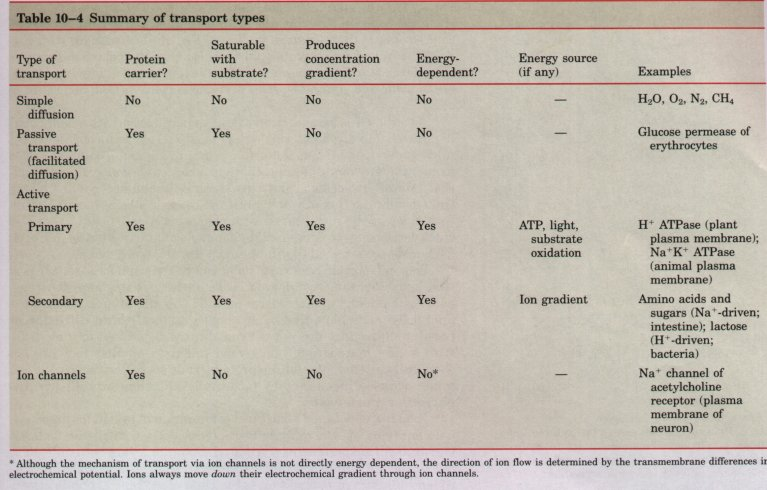
| Water itself is an exception to this
generalization. Although polar, it diffuses rapidly
across biological membranes by mechanisms not fully
understood. When the solute concentrations on two sides
of a membrane are very different, there is a
concentration gradient of soluent (water) molecules, and
this osmotic imbalance results in the transmembrane flux
of water until the osmotic strength equalizes on both
sides of the membrane. A few biologically important gases
also cross membranes by simple diffusion: molecular
oxygen (O2), nitrogen (N2), and methane (CH4), all of which are
relatively nonpolar. Transmembrane passage of polar compounds and ions is made possible by membrane proteins that lower the activation energy for transport by providing an alternative path for specific solutes through the lipid bilayer. Proteins that bring about this facilitated difFusion or passive transport are not enzymes in the usual sense; their "substrates" are moved from one compartment to another, but are not chemically altered. Membrane proteins that speed the movement of a solute across a membrane by facilitating diffusion are called transporters or permeases. |
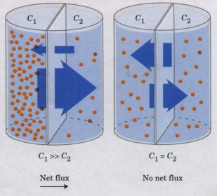 Fignre 10-16 The rate of net movement of a solute across a permeable membrane depends upon the size of the concentration gradient. C1 and C2 are the solute concentrations on the left and right sides of the membrane |
The kind of detailed structural information obtained for many soluble enzymes by x-ray crystallography is not yet available for most membrane transporters; as a group, these proteins are both difficult to purify and difficult to crystallize. However, from studies of the specificity and kinetics of transporters it is clear that their action is closely analogous to that of enzymes. Like enzymes, transporters bind their substrates through many weak, noncovalent interactions and with stereochemical specificity. The negative free-energy change that occurs with these weak interactions, ?Gbinding, counterbalances the positive free-energy change that accompanies loss of the water of hydration from the substrate, ?Gdehydration, thereby lowering the activation energy, ?G++, for transmembrane passage (Fig. 10-17). Transporter proteins span the lipid bilayer at least once, and usually several times, forming a transmembrane channel lined with hydrophilic amino acid side chains. The channel provides an alternative path for its specific substrate to move across the lipid bilayer, without having to dissolve in it, further lowering OG$ for transmembrane diffusion. The result is an increase of orders of magnitude in the rate of transmembrane passage of the substrate.
Energy-yielding metabolism in the erythrocyte depends on a constant supply of glucose from the blood plasma, where its concentration is maintained at about 5 mM. Glucose enters the erythrocyte by facilitated diffusion via a specific glucose permease (Fig. 10-18). This integral membrane protein (Mr 45,000) has 12 hydrophobic segments, and probably spans the membrane 12 times. It allows glucose entry into the cell at a rate about 50,000 times greater than its unaided diffusion through a lipid bilayer. Because glucose transport into erythrocytes is a typical example of passive transport, we will look at it in some detail.
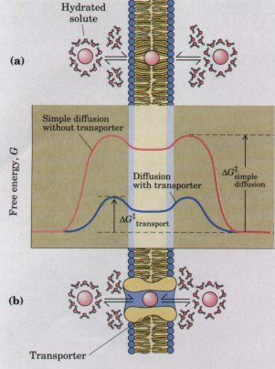 Figure 10-17 Energy changes that occur as a solute in aqueous solution passes through the lipid bilayer of a biological membrane. (a) In simple diffusion, the removal of the hydration shell is highly endergonic, and the energy of activation (?G++) for diffusion through the bilayer is very high. (b) A transporter protein-by forming noncovalent interactions with the dehydrated solute to replace its hydrogen bonds with water, and by providing a hydrophilic transmembrane passageway-reduces the ,?G++ for transmembrane diffusion of the solute. |
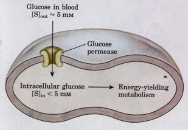 Figure 10-18 The glucose permease of erythrocytes facilitates the passage of glucose into the cell, down its concentration gradient. The 12 transmembrane segments of the permease form a hydrophilic path through the hydrophobic center of the membrane. |
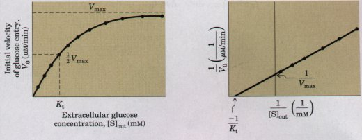 |
Figure 10-19 The initial rate of glucose entry into an erythrocyte depends upon the initial concentration of glucose on the outside, [S]out. The kinetics of facilitated diffusion are analogous to the kinetics of an enzyme-catalyzed reaction. Compare these plots with Fig. 8-11, and Fig. 1 in Box 8-l. Note that KL is analogous to Km the Michaelis-Menten constant. |
The process of glucose transport can be described by analogy with an enzymatic catalysis in which the "substrate" is glucose outside the cell (Sout), the "product" is glucose inside (Sin), and the "enzyme" is the transporter, T. When the rate of glucose uptake is measured as a function of external glucose concentration (Fig. 10-19), the resulting plot is hyperbolic; at high external glucose concentrations the rate of uptake approaches Vmax;,aX. Formally, such a transport process can be described by the equations
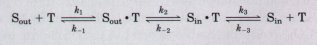
.in which kl, k-1, etc., are the forward and reverse rate constants for each step. The first step is the binding of glucose to a stereospecific site on the transporter protein on the exterior surface of the membrane; step 2 is the transmembrane passage of the substrate; and step 3 is the release of the substrate (product), now on the inner surface of the membrane, from the transporter into the cytoplasm
The rate equations for this process can be derived exactly as for enzyme-catalyzed reactions (Chapter 8), yielding an expression analogous to the Michaelis-Menten equation:
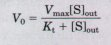
in which V0 is the initial velocity of accumulation of glucose inside the cell when its concentration in the surrounding medium is [S]out, and Kt (Ktransport) is a constant, analogous to the Michaelis-Menten constant, a combination of rate constants characteristic of each transport system. This equation describes the initial velocity-the rate observed when [S]in = 0.
Because no chemical bonds are made or broken in the conversion of Sout into Sin, neither "substrate" nor "product" is intrinsically more stable, and the process of entry is therefore fully reversible. As [S]in approaches [S]out, the rates of entry and exit become equal. Such a system is therefore incapable of accumulating the substrate (glucose) within cells at concentrations above that in the surrounding medium; it simply achieves equilibration of glucose on the two sides of the membrane at a much higher rate than would occur in the absence of a specific transporter. The glucose transporter is specific for n-glucose, for which the measured Kt is 1.5 mM. For the close analogs n-mannose and n-galactose, which differ only in the position of one hydroxyl group, the values of Kt are 20 and 30 mM, respectively, and for L-glucose, Kt exceeds 3,000 mnz! (Recall that a high Kt generally reflects a low affinity of transporter for substrate. ) The glucose transporter of the erythrocyte therefore shows the three hallmarks of passive transport: high rates of diffusion down a concentration gradient, saturability, and specificity.
The erythrocyte contains another facilitated diffusion system, an anion exchanger, which is essential in CO2transport from tissues such as muscle and liver to the lungs. Waste CO2 released from respiring tissues into the blood plasma enters the erythrocyte, where it is converted into bicarbonate (HCO3 ) by the enzyme carbonic anhydrase (Fig. 10-20). The HCO3 reenters the blood plasma for transport to the lungs. Because HCO3 is much more soluble in blood plasma than is CO2, this roundabout route increases the blood's capacity to carry carbon dioxide from the tissues to the lungs. In the lungs, HCO3 reenters the erythrocyte and is converted to CO2, which is eventually exhaled. For this shuttle to be effective, very rapid movement of HCO3 across the erythrocyte membrane is required.
| The chloride-bicarbonate exchanger, also called the anion exchange protein, or (for historical reasons) band 3, increases the permeability of the erythrocyte membrane to HCO3 by a factor of more than a million. Like the glucose transporter, it is an integral membrane protein that probably spans the membrane 12 times. Unlike the glucose transporter, this protein mediates a bidirectional exchange; for each HCO3 ion that moves in one direction, one Cl- ion must move in the opposite direction (Fig. 10-20). The result of this paired movement of two monovalent anions is no net change in the charge or electrical potential across the erythrocyte membrane; the process is not electrogenic. The coupling of Cl- and HCO3 movement is obligatory; in the absence of chloride, bicarbonate transport stops. In this respect, the anion exchanger resembles many other systems that simultaneously carry two solutes across a membrane, all of which are called cotransport systems. When, as in this case, the two substrates move in opposite directions, the process is antiport. In symport, two substrates are moved simultaneously in the same direction (Fig. 10-21). Transporters that carry only one substrate, such as the glucose permease, are sometimes called uniport systems. | 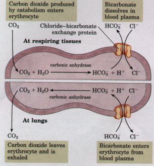 Figure 10-20 The chloride-bicarbonate exchanger of the erythrocyte membrane allows the entry and exit of HCO3 without changes in the transmembrane electrical potential. The role of this shuttle system is to increase the CO2-carrying capacity of the blood. |
| In passive transport, the transported species always moves down its concentration gradient, and no net accumulation occurs. Active transport, by contrast, results in the accumulation of a solute on one side of a membrane. Active transport is thermodynamically unfavorable (endergonic), and occurs only when coupled (directly or indirectly) to an exergonic process such as the absorption of sunlight, an oxidation reaction, the breakdown of ATP, or the concomitant flow of some other chemical species down its concentration gradient. In primary active transport, solute accumulation is coupled directly to an exergonic reaction (e.g., conversion of ATP to ADP + Pi). Secondary active transport occurs when endergonic (uphill) transport of one solute is coupled to the exergonic (downhill) flow of a different solute that was originally pumped uphill by primary active transport. | 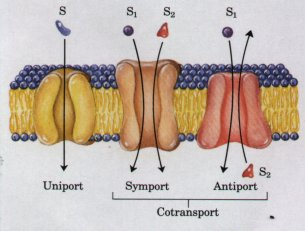 Figure 10-21 The three general classes of transport systems differ in the number of solutes (substrates) transported and the direction in which each is transported. Examples of all three types of transporters are discussed in the text. Note that this classification tells us nothing about whether these are energy-requiring (active transport) or energy-independent (passive transport) processes. |
The amount of energy needed for the transport of a solute against a gradient can easily be calculated from the initial concentration gradient. The general equation for the free-energy change in the chemical process that converts S into P is
?G = ?G0'+ RT ln [ P] ...................(10-1) [S]
where R is the gas constant 8.315 J/mol.K and T is the absolute temperature. When the "reaction" is simply transport of a solute from a region where its concentration is C1 to another region where its concentration is C2, no bonds are made or broken and the standard freeenergy change, ?G0', equals zero. The free-energy change for transport,?Gt, is then
?Gt = RT ln (C2 /C1) ...............(10-2)
For a tenfold gradient, the cost of moving 1 mol of an uncharged solute across the membrane separating two compartments at 25 ? is therefore
?Gt = (8.315 J/mol .K)(298 K)(ln 10/1) = 5,705 J/mol
or 5.7 kJ/mol. Equation 10-2 holds for all uncharged solutes. When the solute is an ion, its movement without an accompanying counterion results in the endergonic separation of positive and negative charges. The energetic cost of moving an ion therefore depends on the difference of electrical potential across the membrane as well as the difference in the chemical concentrations (that is, the electrochemical potential):
?Gt = RT ln (C2/Cl) + ZF?? (10-3)
where Z is the charge on the ion, F is the Faraday constant (96,480 J/V ?mol), and ?? is the transmembrane electrical potential (in volts). Eukaryotic celis typically have electrical potentials across their plasma membranes of the order of 0.05 to 0.1 V, so the second term of Equation 10-3 can be a significant contribution to the total free-energy change for transporting an ion. Most cells maintain ion gradients larger than tenfold across their plasma or intracellular membranes, and for many cells and tissues, active transport is therefore a major energy-consuming process.
The mechanism of active transport is of fundamental importance in biology. As we shall see in Chapter 18, the formation of ATP in mitochondria and chloroplasts occurs by a mechanism that is essentially ATP-driven ion transport operating in reverse. The energy made available by the spontaneous flow of protons across a membrane is calculable from Equation 10-3; remember that for flow down a concentration gradient, the sign of ~G is opposite to that for transport against the gradient.
| Virtually every animal cell maintains a lower concentration of Na+ and a higher concentration of K+ than is found in its surrounding medium (in vertebrates, extracellular fluid or the blood plasma) (Fig. 10-22). This imbalance is established and maintained by a primary active transport system in the plasma membrane, involving the enzyme Na+K+ ATPase, which couples breakdown of ATP to the simultaneous movement of both Na+ and K+ against their concentration gradients. For each molecule of ATP converted to ADP and P;, this transporter moves two K+ ions inward and three Na+ ions outward, across the plasma membrane. The Na+K+ ATPase is an integral membrane protein with two subunits (M,. ~ 50,000 and ~110,000), both of which span the membrane. | 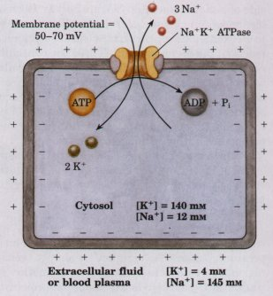 Figure 10-22 The Na+K+ ATPase is primarily responsible for setting and maintaining the intracellular concentrations of Na+ and K+ and for generating the transmembrane electrical potential, which it does by moving 3 Na+ out of the cell for every 2 K+ it moves in. The electrical potential is central to electrical signaling in neurons, and the gradient of Na+ is used to drive uphill cotransport of various solutes in a variety of cell types. |
| The detailed mechanism by which ATP
hydrolysis is coupled to transport remains to be
established, but a current working model (Fig. 10-23)
supposes that the ATPase cycles between two
conformations: conformation II, a phosphorylated form
(designated P-EnzII) with high affinity for K+ and low
affmity for Na+, and conformation I, a dephosphorylated
form (Enzl) with high affinity for Na+ and low affinity
for K+. The conversion of ATP to ADP and P; occurs in two
steps catalyzed by the enzyme: (1) formation of phosphoenzyme:
(2) hydrolysis of phosphoenzyme: P-EnzII + H20 ~ Enzl + P; which sum to the hydrolysis of ATP: ATP + H20 ~ ADP + P;. Because three Na+ ions move outward for every two K+ ions that move inward, the process is electrogenic-it creates a net separation of charge across the membrane, making the inside of the cell negative relative to the outside. The resulting transmembrane potential of -50 to -70 mV (inside negative relative to outside) is essential to the conduction of action potentials in neurons, and is also characteristic of most nonneuronal animal cells. The activity of this Na+K+ ATPase in extruding Na+ and accumulating K+ is an essential cell functiom about 25% of the energy-yielding metabolism of a human at rest goes to support the Na+K+ ATPase. |
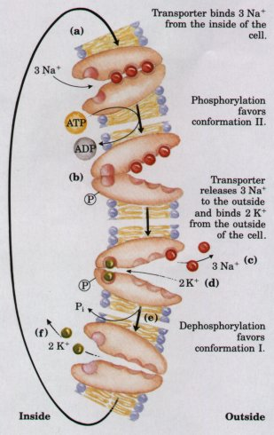 Fignre 10-23 Postulated mechanism of Na+ and K+ transport by the Na+K+ ATPase. The process begins with the binding of three Na+ to high-affmity sites on the large subunit of the transport protein on the inner surface of the membrane (a). This same part of the large subunit also has the ATPbinding site. Phosphorylation of the transporter changes its conformation (b) and decreases its af finity for Na+, leading to Na+ release on the outer surface (c). Next, K+ on the outside binds to highaffmity sides on the extracellular po:-tion of the large subunit (d), the enzyme is dephosphorylated, reducing its affinity for K+ (e), and K+ is discharged on the inside (t~. The transport protein is now ready for another cycle of Na+ and K+ pumping. |
Ouabain (pronounced 'wa-ban), a steroid derivative extracted from the seeds of an African shrub, is a potent and specific inhibitor of' the Na+K+ ATPase. Ouabain is a powerful poison used to tip hunting arrows; its name is derived from waba yo, meaning "arrow poison."
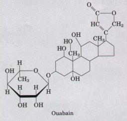
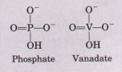
The Na+K+ ATPase is the prototype for a class of transporters (Table 10-5), all of which are reversibly phosphorylated as part of the transport cycle-thus the name, P-type ATPase. All P-type transport ATPases share amino acid sequence homology, especially near the Asp residue that undergoes phosphorylation, and all are sensitive to inhibition by the phosphate analog vanadate. Each is an integral membrane protein having multiple membrane-spanning regions. P-type transporters are very widely distributed. In higher plants, a P-type H+ ATPase pumps protons out of the cell, establishing a difference of as much as 2 pH units and 250 mV across the plasma membrane. For each proton transported, one ATP is consumed. A similar P-type ATPase is responsible for pumping protons from the bread mold Neurospora, and for pumping H+ and K~ across the plasma membranes of cells that line the mammalian stomach, acidifying its contents (Table 10-5).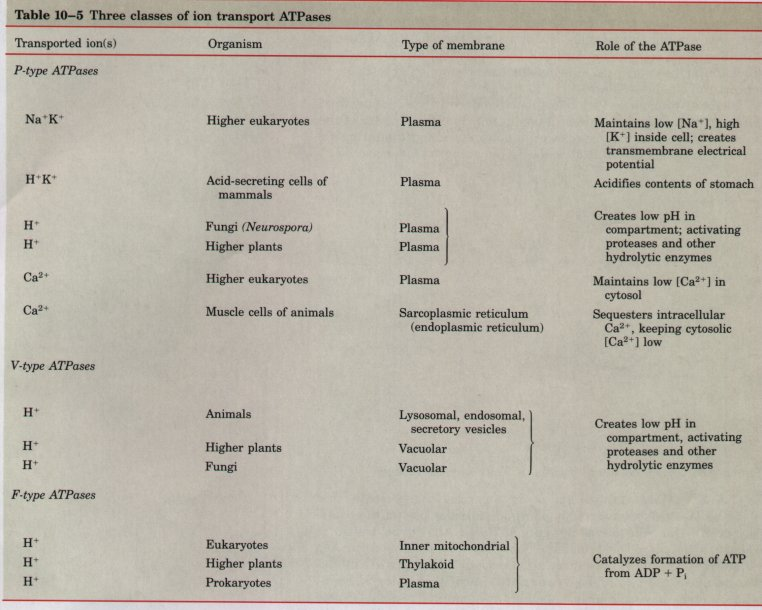
A distinctly different class of transport ATPases is responsible for acidifying intracellular compartments in many organisms. Within the vacuoles of higher plants and of fungi, for example, the pH is maintained well below that of the surrounding cytoplasm by the action of V-type ATPase-proton pumps. V-type (for vacuole) ATPases are also responsible for the acidification of lysosomes, endosomes, the Golgi complex, and secretory vesicles in animal cells. Unlike P-type ATPases, these proton-pumping ATPases (Table 10-5) do not undergo cyclic phosphorylation and dephosphorylation, and are not inhibited by vanadate or ouabain. The mechanism by which they couple ATP hydrolysis to the concentrative transport of protons is not yet known.
A third family of ATP-splitting proton pumps plays the central role in energy-conserving reactions in bacteria, mitochondria, and chloroplasts. This group of related enzymes, the F-type ATPases (Table 105), will be discussed when we describe ATP formation in mitochondria and chloroplasts (Chapter 18). (The F in their name originated in their identification as energy-couplingfactors.) They catalyze the reversible transmembrane passage of protons, driven by ATP hydrolysis. Flow of protons across the membrane down their concentration gradient is accompanied by ATP synthesis from ADP and P;, the reversal of ATP hydrolysis. In this role, the F-type ATPase is more appropriately named ATP synthase. In some cases, the formation of the proton gradient in energy-conserving processes is driven by an energy source other than ATP, such as substrate oxidation or sunlight, as we will discuss in Chapter 18.
The ion gradients formed by primary transport of Na+ or H+ driven by light, oxidation, or ATP hydrolysis can themselves provide the driving force for the cotransport of other solutes (Fig. 10-24). Many cells contain transport systems that couple the spontaneous, downhill flow of H+ or Na+ to the simultaneous uphill pumping of another ion, sugar, or amino acid (Table 10-6). The galactoside permease of E. coli allows the accumulation of the disaccharide lactose to levels 100 times that in the surrounding growth medium (Fig. 10-25). E. coli normally has a proton gradient across its plasma membrane, produced by energyyielding metabolism; protons tend spontaneously to flow back into the cell, down this gradient. The lipid bilayer is impermeable to protons, but the galactoside permease provides a route for proton reentry, and lactose is simultaneously carried into the cell on the symporter protein (permease). The endergonic accumulation is thereby coupled to the exergonic flow of protons; the total free-energy change for the coupled process is negative.
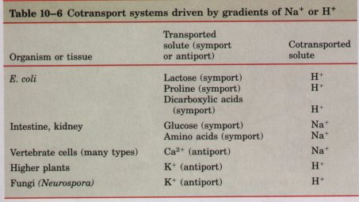
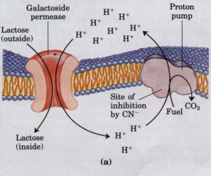 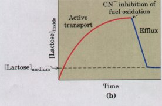 Fignre 10-24 In secondary active transport, a single cotransporter couples the flow of one solute (solute l; e.g., H+ or Na+ ) down its concentration gradient to the pumping of a second solute (solute 2; e.g., lactose or glucose) against its concentration gradient. When OGl + OG2 < 0, cotransport occurs spontaneously. A specific example of this general process is shown in Fig. 10-25. |
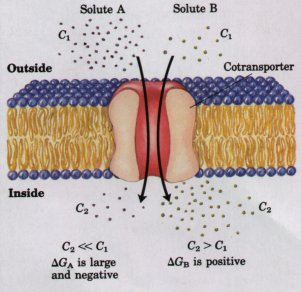 Figure 10-25 Lactose uptake in E. coli. (a) The primary transport of H' out of the cell, driven by the oxidation of a variety of fuels, establishes a proton gradient. Secondary active transport of lactose into the cell involves symport of H' and lactose by the galactoside permease. The uptake of lactose against its concentration gradient is entirely dependent on this inflow of H' . (b) When the energyyielding oxidation reactions are blocked by cyanide (CN~ ), there is an efflux of lactose from the cell, and no further accumulation occurs. The broken line represents the concentration of lactose in the surrounding medium. When active transport is blocked by cyanide, the galactoside permease allows equilibration of lactose inside and outside the cell (passive transport). |
| In intestinal epithelial cells, glucose
and certain amino acids are accumulated by symport with
Na+, using the Na+ gradient established by the Na+K+
ATPase. Most cells of vertebrate animals also have an
antiport system that simultaneously pumps one Ca~+ ion
out of a cell and allows three Na+ ions in, thereby
maintaining the very low intracellular Caz+ concentration
necessary for normal function. The role of Na+ in symport
and antiport systems such as these requires the continued
outward pumping of Na+ to maintain the transmembrane Na+
gradient. Clearly, the Na+K+ ATPase is a central element
in many cotransport processes. Because of the essential role of ion gradients in active transport and energy conservation, natural products and drugs that collapse the ion gradients across cellular membranes are poisons, and may serve as antibiotics. Valinomycin is a small, cyclic peptide that folds around K+ and neutralizes its positive charge (Fig. 10-26). The peptide then acts as a shuttle, carrying K+ across membranes down its concentration gradient and deflating that gradient. Compounds that shuttle ions across membranes in this way are called ionophores, literally "ionbearers." Both valinomycin and monensin (a Na+-carrying ionophore) are antibiotics; they kill microbial cells by disrupting secondary transport processes and energy-conserving reactions. |
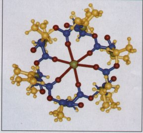 Figure 10-26 Valinomycin, a peptide ionophore that binds K+. The oxygen (red) atoms that bind K+ (the green atom at the center) are part of a central hydrophilic cavity. Hydrophobic amino acid side chains (yellow) coat the outside of the molecule. Because the exterior of the K+-valinomycin complex is hydrophobic, it readily diffuses through membranes, carrying K+ down its concentration gradient. The resulting dissipation of the transmembrane ion gradient kills cells, making valinomycin a potent antibiotic. |
A third transmembrane path for ions, distinct from both transporters and ionophores, is provided by ion channels, found in the plasma membranes of neurons, muscle cells, and many other cells, both prokaryotic and eukaryotic. Various stimuli cause rapid changes in the electrical potential across the plasma membranes of neurons and muscle cells, the result of the rapid opening and closing of ion channels. One of the best-studied ion channels is the acetylcholine receptor of the vertebrate synapse (the point of connection between two neurons; Fig. 10-27), which plays an essential role in the passage of a signal from one neuron to the next. When the electrical signal carried by the presynaptic neuron reaches the synaptic end of the cell, the neurotransmitter acetylcholine is released into the synaptic cleft. Acetylcholine rapidly diffuses across the cleft to the postsynaptic neuron, where it binds to high-affinity sites on the acetylcholine receptor. This binding induces a change in receptor structure, opening a transmembrane channel in the receptor protein. Cations in the extracellular fluid, present at higher concentration than in the cytosol of the postsynaptic neuron, flow through the opened channel into the cell, down their concentration gradient, thereby depolarizing (decreasing the transmembrane electrochemical gradient of) the postsynaptic cell. The acetylcholine receptor allows Na+ and K+ to pass with equal ease, but other cations and all anions are unable to pass through it.
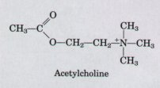 The rate of Na+ movement through the acetylcholine receptor ion channel is linear with respect to extracellular Na+ concentration; the process is not saturable in the way that transporter-catalyzed translocation is saturable with substrate (see Fig. 10-19). This kinetic property distinguishes ion channels from passive transporters. Na+ movement through the channel is very fast-almost at the rate expected for unhindered diffusion of the ion. Under physiological conditions of ion concentrations and membrane potential, about 2 x 10~ Na+ ions can pass through a single channel in 1 s. A comparison of this figure with the turnover numbers for typical enzymes, which are in the range of 10 to 105 s~l, shows the efiiciency of transmembrane diffusion through an ion channel. In short, the ion channel of the acetylcholine receptor behaves as though it provided a hydrophilic pore through the lipid bilayer through which an ion of the right size, charge, and geometry can diffuse very rapidly down its electrochemical gradient. This receptor/channel is typical of many ion channels in cells that produce or respond to electrical signals: it has a "gate" that opens in response to stimulation by acetylcholine, and an intrinsic timing mechanism that closes the gate after a split second. Thus the acetylcholine signal is transient-an essential feature of electrical signal conduction. |
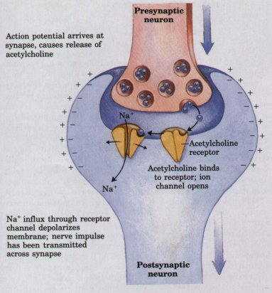 Figure 10-27 Communication occurs across the synaptic cleft between adjoining neurons as acetylcholine released by the presynaptic cell diffuses to specific receptors on the postsynaptic cell. The binding of acetylcholine changes the conformation of the receptor, and results in the opening of a receptor-associated ion channel. Na' flows in, down its concentration gradient, carrying positive charge and reducing the membrane electrical potential (depolarizing the cell). Depolarization initiates an electrical signal (action potential) that sweeps through the postsynaptic neuron at very high speed and is conducted to the next synapse, where these events may be repeated. |